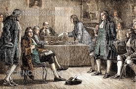
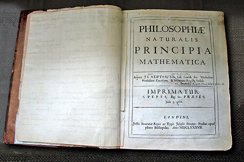
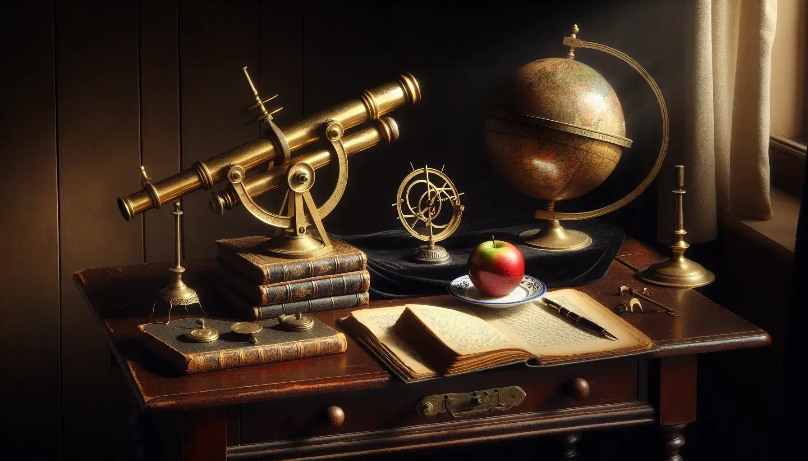

El 20 de marzo de 1727 del calendario juliano, 31 de marzo en el calendario gregoriano, entonces en vigor en Inglaterra, murió sir Isaac Newton, quien días más tarde fue enterrado en la abadía de Westminster en un funeral donde se dio cita prácticamente toda la intelectualidad de Gran Bretaña y buena parte de su aristocracia.
Se rendía homenaje a un hombre de ciencia, a un matemático, a un filósofo natural y al primer científico nombrado caballero por la reina en la historia de aquel país. A su muerte ocupaba la presidencia de la Royal Society, era miembro de la Comisión de Longitud y su influencia fluía por todos los canales de la cultura británica. A un asistente al funeral procedente de Francia y de sobrenombre Voltaire le sorprendió que la sociedad británica honrara la figura de un sabio.
Isaac Newton murió octogenario y con la fama de poseer una mente con una capacidad extraordinaria para dominar las ciencias más difíciles: las matemáticas y el cálculo, la mecánica de los cuerpos celestes y el comportamiento de la luz. De hecho, sus contemporáneos lo admiraron tanto que no pudieron contener sus exageraciones.
Primeros Años y Educación
El hombre que murió siendo considerado el sabio universal nació el 25 de diciembre de 1642 (según el calendario juliano, usado en Inglaterra en ese momento; 4 de enero de 1643 en el calendario gregoriano moderno) en Woolsthorpe, una aldea en el condado de Lincolnshire, Inglaterra, en el seno de una familia puritana inglesa. Su infancia no fue feliz: su padre murió antes de su nacimiento, y a los tres años su madre lo dejó con su abuela para casarse con un clérigo anglicano, aunque cuando el niño contaba once años, su madre enviudó de nuevo y volvió con él.
Asistió a la King's School en Grantham, donde mostró aptitudes para la mecánica, construyendo maquetas y molinos de viento. A los 18 años, en 1661, ingresó en el Trinity College de la Universidad de Cambridge, donde estudió bajo el sistema de la época, que se basaba principalmente en las obras de Aristóteles. Sin embargo, el joven Newton pronto se interesó por las ideas más modernas de filósofos como René Descartes, Johannes Kepler y Galileo Galilei. Se graduó en 1665 sin distinciones particulares.
La Forja de un Genio

Newton se formó en los años en que triunfaba en toda Europa la revolución científica, ligada a autores como Kepler, Galileo, Descartes, Borelli, Hobbes, Gassendi, Hooke y Boyle, cuyas obras estudió con atención. Newton comenzó siendo un seguidor de Descartes, como lo era todo aquel que estuviera interesado en la renovación de la filosofía natural y mecánica lo era.
En particular, el poder de la matemática de Descartes fascinó a los científicos de esa misma generación; también a Newton. Pero, a diferencia de otros, Newton tuvo un pensamiento propio y no se dejó arrastrar ni siquiera por una filosofía tan atractiva como la de Descartes, y así, ya en la década de 1660, criticó en sus escritos la concepción cartesiana del movimiento y desarrolló una teoría alternativa sobre la naturaleza de la luz y los colores.
En 1672 Newton ingresó en la Royal Society, una institución fundada en Londres en 1660 que reunía a los principales científicos ingleses, y ese mismo año presentó ante sus miembros una memoria titulada Nueva teoría de la luz y los colores, en la que explicaba la relación entre la luz blanca solar y los colores del arcoíris. Estudiosos anteriores, como Descartes y Huygens, creían que la luz propiamente dicha era la luz blanca, la cual estaba formada por partículas que se difundían en ondas. Los colores, por su parte, se consideraban propiedades de las superficies del material sobre el que incidía la luz.
Sin embargo, Newton, a través de una serie de experimentos realizados con prismas, llegó a la conclusión de que los colores eran propiedades de la misma luz, y que la luz blanca no era sino la combinación de rayos de luz de diversos colores. La luz no era, pues, el resultado de la vibración de ningún éter material, sino una sustancia con propiedades.
Estas ideas no gustaron a Robert Hooke, un influyente miembro de la Royal Society que había dedicado todos sus esfuerzos a desarrollar la tesis de Descartes y Huygens. Su dura crítica a la memoria presentada por Newton fraguó entre ellos una enemistad que duraría décadas. Newton no perdonó a Hooke, se refugió en Cambridge, cortó sus relaciones con la Royal Society y sólo regresó formalmente a ella como presidente el año de la muerte del detestado Hooke, en 1703.
Rencoroso e implacable, Newton se apresuró a borrar todas las huellas del trabajo de Hooke en la Royal Society, incluidos sus retratos. En 1704 publicó su Óptica, escrita en inglés y que recogía su interpretación corpuscular de la luz, un triunfo sobre los cartesianos ingleses de la época.
La Obra Maestra: Principia Mathematica

Aunque Newton había desarrollado sus ideas sobre la gravitación y el movimiento años antes, no las publicó de inmediato. Fue el astrónomo Edmond Halley quien, tras debatir con Newton en 1684, lo animó a formalizar y publicar su trabajo. El resultado fue Philosophiæ naturalis principia mathematica, publicado en 1687, que es ampliamente considerada la obra científica más importante jamás escrita.
En los Principia, Newton formuló sus tres leyes del movimiento y la ley de la gravitación universal. Estas leyes explicaban no solo la caída de los objetos en la Tierra, sino también el movimiento de los planetas y cometas en el espacio, unificando la física terrestre y celeste bajo un mismo conjunto de principios matemáticos y proporcionando la primera descripción precisa de la gravedad.
Últimos Años y Legado
Además de su trabajo científico, Newton fue un hombre de muchos intereses. Dedicó una cantidad significativa de tiempo a la alquimia y a estudios teológicos. También tuvo una carrera pública notable:
- Fue elegido miembro del Parlamento por la Universidad de Cambridge en dos ocasiones.
- En 1696, se mudó a Londres para asumir el cargo de Guardián y más tarde Maestro de la Casa de la Moneda Real, donde supervisó con éxito la gran reacuñación de la moneda inglesa, luchando contra falsificadores con gran celo.
- En 1703, fue elegido presidente de la prestigiosa Royal Society, cargo que ocupó hasta su muerte.
- En 1705, la Reina Ana le concedió el título de Sir, convirtiéndose en Sir Isaac Newton.
Isaac Newton murió en Londres el 20 de marzo de 1727 (31 de marzo en el calendario gregoriano) y fue enterrado en la Abadía de Westminster. Su legado es inmenso; sus leyes del movimiento y la gravitación universal dominaron la ciencia física durante más de 200 años, sentando las bases para la ingeniería y la ciencia modernas y culminando la Revolución Científica del siglo XVII. 